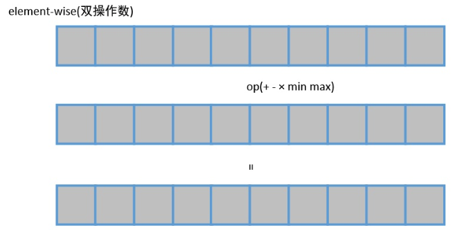
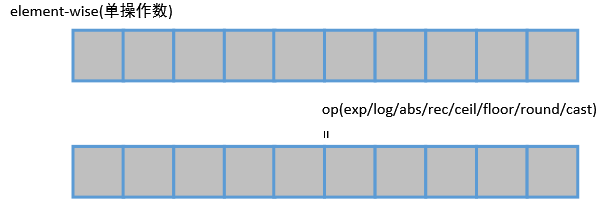
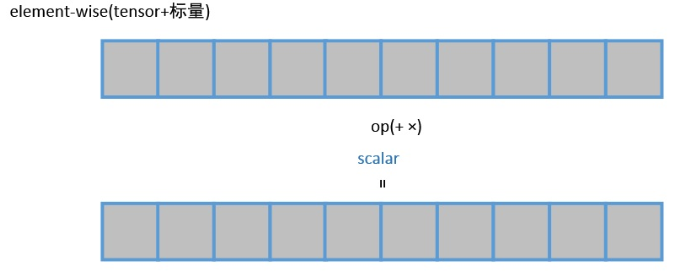
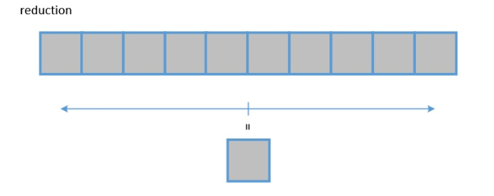

说明
为了改善用户自定义算子的易用性，提高开发效率，我们对部分Vector算子进行了模块化封装。针对Element wise操作的接口，用户需要利用TVM原语来定义自己的输入Tensor（张量），然后调用封装的接口，简要描述下自定义算子的计算过程，然后再调用提供的Auto schedule和Build接口把自定义算子编译生成二进制可执行文件。
在Tensor Engine中提供了一组封装好的接口，目前主要涵盖向量运算，包括如下几部分。
您可以在DDK包的安装目录下的“ddk/site-packages/te-0.4.0-linux-x86_64.egg/te/lang/cce/te_compute“、“ddk/site-packages/te-0.4.0-linux-x86_64.egg/te/lang/cce/te_schedule“和“ddk/site-packages/topi-0.4.0.egg/topi/generic“目录下查看接口的定义文件。如果通过引导安装的方式同时安装Mind Studio和DDK，您可以使用Mind Studio安装用户登录Mind Studio服务器，在“~/tools/che/ddk/ddk/site-packages“路径下的对应目录下查看接口定义文件。每个接口对应的定义文件请参见具体的接口描述。
Element-wise类操作接口
对输入数据进行逐个元素对应运算的操作，这种操作的输出往往具有与输入相同的形状。
双操作数操作。输入两个Tensor（张量）进行2个Tensor之间逐元素运算，得到一个结果的操作。
- 两个Tensor对应元素相加，详细请参见te.lang.cce.vadd（lhs, rhs）。
- 两个Tensor对应元素相减，详细请参见te.lang.cce.vsub（lhs, rhs）。
- 两个Tensor对应元素相乘，详细请参见te.lang.cce.vmul（lhs, rhs）。
- 两个Tensor对应元素比较取较小值，详细请参见te.lang.cce.vmin（lhs, rhs）。
- 两个Tensor对应元素比较取较大值，详细请参见te.lang.cce.vmax（lhs, rhs）。
- 两个Tensor对应元素按位求或，详细请参见te.lang.cce.vor（lhs, rhs）。
- 两个Tensor对应元素按位求与，详细请参见te.lang.cce.vand（lhs, rhs）。

单操作数操作。对输入的一个张量进行逐元素运算。
- 自然指数，详细请参见te.lang.cce.vexp（raw_tensor）。
- 对数，详细请参见te.lang.cce.vlog（raw_tensor）。
- 绝对值，详细请参见te.lang.cce.vabs（raw_tensor）。
- 倒数，详细请参见te.lang.cce.vrec（raw_tensor）。
- 向上取整，详细请参见te.lang.cce.ceil（raw_tensor）。
- 向下取整，详细请参见te.lang.cce.floor（raw_tensor）。
- 四舍六入，详细请参见te.lang.cce.round（raw_tensor）。
- 转换数据类型，详细请参见te.lang.cce.cast_to（data, dtype, f1628IntegerFlag=False）。
- 实现relu计算，详细请参见te.lang.cce.vrelu（raw_tensor）。
- 按位取反，详细请参见te.lang.cce.vnot（raw_tensor）。

Tensor与标量数值的运算操作。输入Tensor的每个元素与同一个数值进行运算。
- Tensor加上标量，详细请参见te.lang.cce.vadds（raw_tensor, scalar）。
- Tensor乘上标量，详细请参见te.lang.cce.vmuls（raw_tensor, scalar）。

三操作数。输入为3个。tensor与标量按照上边的规则混合运算得到一个结果的操作。
- 对一个Tensor进行缩放后和第二个Tensor相加，详细请参见te.lang.cce.vaxpy（lhs, rhs, scalar）。
- 输入为三个Tensor，计算x * y + z，详细请参见te.lang.cce.vmla（x, y, z）。
- 输入为三个Tensor，计算x * z + y，详细请参见te.lang.cce.vmadd（x, y, z）。
- 输入为三个Tensor，计算relu （x * z + y），详细请参见te.lang.cce.vmaddrelu(x, y, z)。
Reduction 操作接口
压缩某一维的数据，沿着指定方向将数据进行累加或累乘等操作，该操作输出比输入数据维度少一维的结果。
- 沿某个轴进行累加，详细请参见te.lang.cce.sum（raw_tensor, axis）。
- 沿某个轴求最小值，详细请参见te.lang.cce.reduce_min（raw_tensor, axis）。
- 沿某个轴求最大值，详细请参见te.lang.cce.reduce_max（raw_tensor, axis）。

注意：
使用限制：由于CCE计算平台的数据排布限制，reduction操作后的数据需要进行一次重排才能进行后续的操作。故当前在使用不同类型的接口时，暂时不能在reduction操作后进行任何向量运算操作。
Broadcast操作接口
Broadcast操作主要是用于处理两个不同形状的tensor进行计算，将低维度的一个操作数按照高维度操作数的维度进行广播，使得两个操作数的维度相同后，再进行element-wise计算。
把较小的tensor广播为较大的tensor，详细请参见te.lang.cce.broadcast（var, shape, output_dtype=None）。

Index操作接口
Index操作，对Tensor进行分段计算，比如求和、均值、内积、最大值、最小值等。
- 对Tensor进行分段求和，详细请参见te.lang.cce.unsorted_segment_sum（tensor, segment_ids, num_segments, init_value=0）。
- 对Tensor进行分段求均值，详细请参见te.lang.cce.unsorted_segment_mean（tensor, segment_ids, num_segments, init_value=0）。
- 对Tensor进行分段求内积，详细请参见te.lang.cce.unsorted_segment_prod（tensor, segment_ids, num_segments, init_value=0）。
- 对Tensor进行分段求最小值，详细请参见te.lang.cce.unsorted_segment_min（tensor, segment_ids, num_segments, init_value=0）。
- 对Tensor进行分段求最大值，详细请参见te.lang.cce.unsorted_segment_max（tensor, segment_ids, num_segments, init_value=0）。

Concat操作接口
Concat操作是沿着某个轴对多个输入的Tensor进行连接。
沿一个轴连接Tensor，详细请参见te.lang.cce.concat（raw_tensors, axis）。
卷积接口
卷积接口是用来实现卷积算子的接口。
实现卷积，详细请参见te.lang.cce.conv（*args）。
4D/5D互转接口
4D维度NCHW与5D维度NC1HWC0互转接口。
- 4D转5D，详细请参见te.lang.cce.compute_four2five（input, raw_shape_4D）。
- 5D转4D，详细请参见te.lang.cce.compute_five2four（input, raw_shape_4D）。